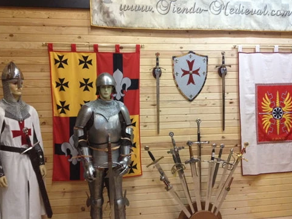

Bienvenido a nuestra tienda
En La Forja del Dragón encontrarás espadas, armaduras, escudos y todo tipo de equipamiento inspirado en la época medieval.

Código fuente disponible en: GitHub
La mejor tienda medieval del reino
En La Forja del Dragón encontrarás espadas, armaduras, escudos y todo tipo de equipamiento inspirado en la época medieval.

Código fuente disponible en: GitHub